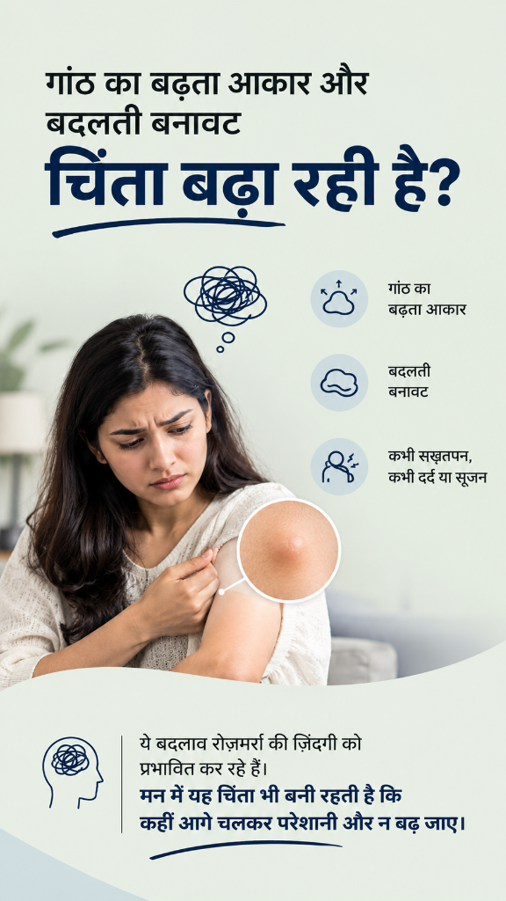
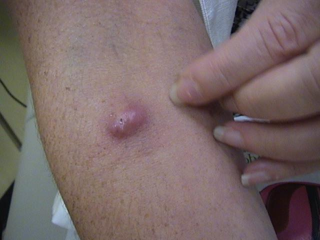
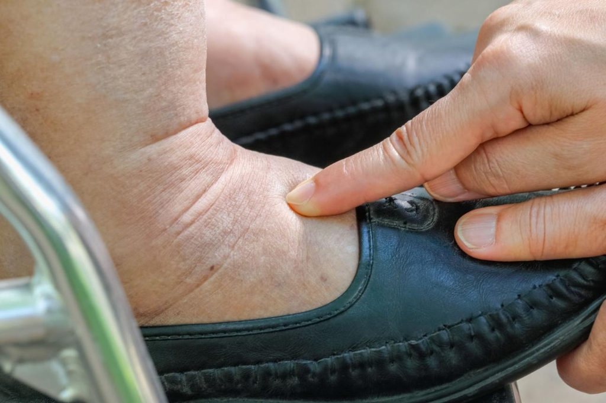
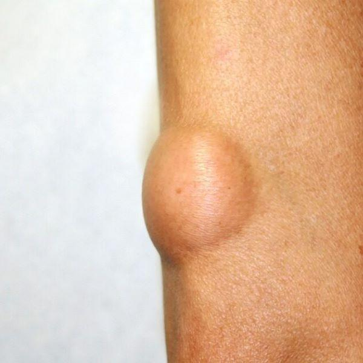
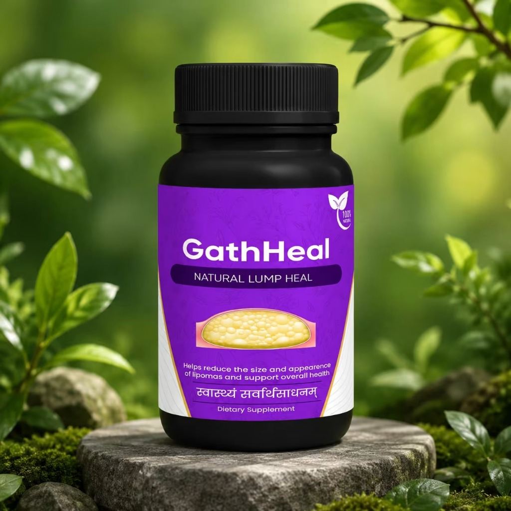
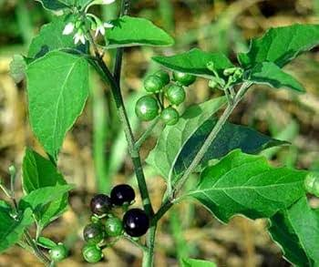

🌿
GathHeal

समस्या को समझें
गांठ के साथ दिखने वाली परेशानियाँ

छूने पर दर्द या संवेदनशीलता

सूजन, दबाव या भारीपन

चलने-फिरने में असहजता
Appearance को लेकर चिंता
GathHeal Capsules
GathHeal Capsules
आपकी दिनचर्या के लिए Ayurvedic Herbal Support

चुनिंदा herbs से तैयार सुविधाजनक capsule formulation, जिसे सही diet और expert guidance के साथ अपनी routine में शामिल करें।
चुनिंदा Ayurvedic herbs
आसान capsule format
Daily routine के अनुकूल
How GathHeal Work
रोज़मर्रा की देखभाल के लिए
Inflammation Support
शरीर की सामान्य प्रक्रियाओं को support करने के लिए।
Comfort Support
Daily comfort और routine का साथ देने के लिए।
Natural Recovery Support
शरीर की प्राकृतिक प्रक्रियाओं को support करने के लिए।
Immunity Support
Overall wellness routine का हिस्सा।
🌿 Ingredients
चुनिंदा Ayurvedic Herbs
Kalmegh
Chirchita
Pashanbhed
